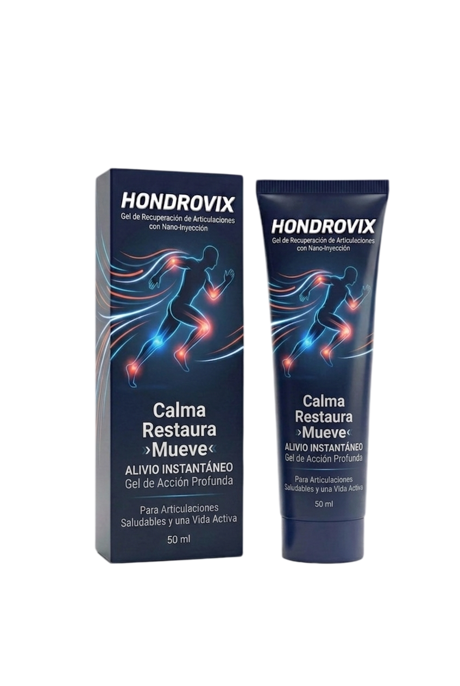
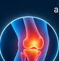
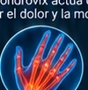
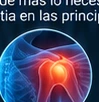
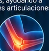
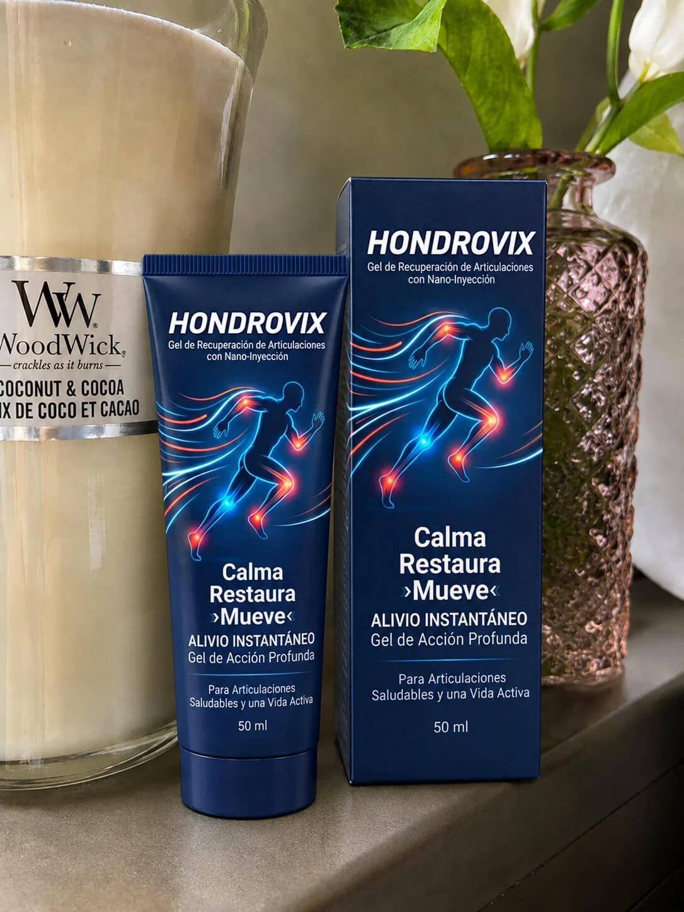
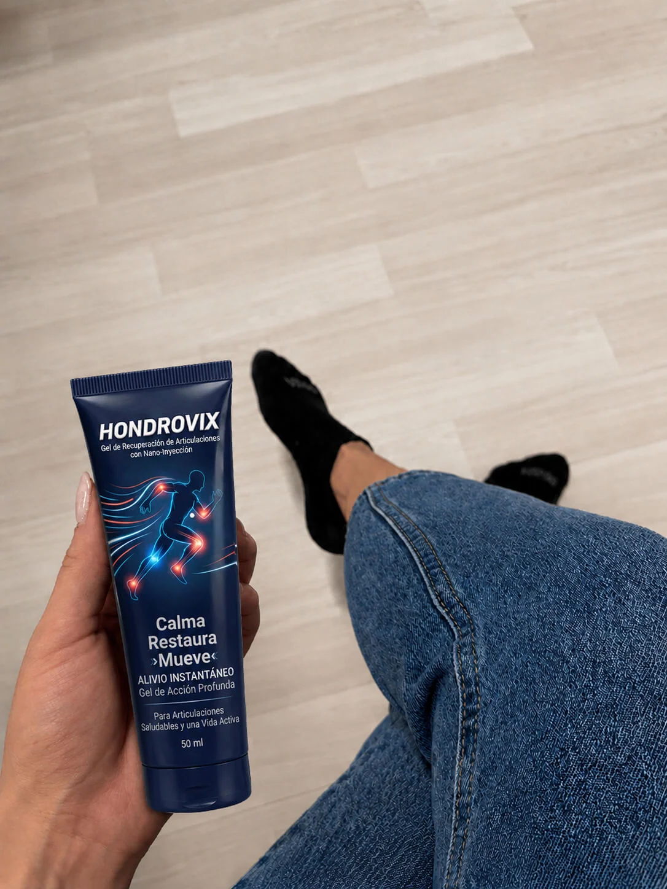

♧Dolor al
“El dolor en mis rodillas era constante, sobre todo al subir escaleras. Con Hondrovix el dolor disminuyó mucho y ahora camino con más confianza.”
★★★★★
María G., 62 añosCiudad de MéxicoHONDROVIX
Hondrovix es un gel para articulaciones diseñado para personas que buscan aliviar el dolor, disminuir la rigidez y volver a moverse con más comodidad.

Hondrovix es un gel de acción profunda para el cuidado de las articulaciones, formulado para aliviar el dolor, disminuir la rigidez y mejorar la comodidad al moverse, caminar, subir escaleras, agacharse o realizar tus actividades diarias.
Una combinación de extractos de origen natural, reconocidos por su apoyo al bienestar articular.
Hondrovix actúa donde más lo necesitas, ayudando a
aliviar el dolor y la molestia en las principales articulaciones.

Rodillas
Manos
Hombros
Codos“El dolor en mis rodillas era constante, sobre todo al subir escaleras. Con Hondrovix el dolor disminuyó mucho y ahora camino con más confianza.”
“Sentía mucha rigidez por las mañanas y me costaba trabajo moverme. Desde que uso Hondrovix, mis articulaciones se sienten más ligeras y flexibles.”
“Tenía molestias en mis hombros y codos después de un día de trabajo. Hondrovix me ha ayudado a sentirme mucho mejor y a seguir haciendo mis actividades sin tanto dolor.”
Hondrovix se ha convertido en el aliado de muchas personas que buscan alivio y mayor comodidad en sus articulaciones, en casa, en el trabajo o en sus actividades diarias.


Hondrovix es un gel para masaje y cuidado localizado de las articulaciones, en presentación de 50 ml.
Está pensado para el cuidado de áreas articulares como rodillas, manos, hombros y codos. La respuesta puede variar de una persona a otra.
Uso externo. Consulta las instrucciones del envase antes de aplicarlo. Evita ojos, mucosas y piel irritada.
El tiempo y la experiencia varían de una persona a otra; no se garantiza un resultado ni un plazo específico.
Los extractos vegetales pueden causar sensibilidad o irritación en algunas personas. Suspende su uso si aparece una reacción adversa.